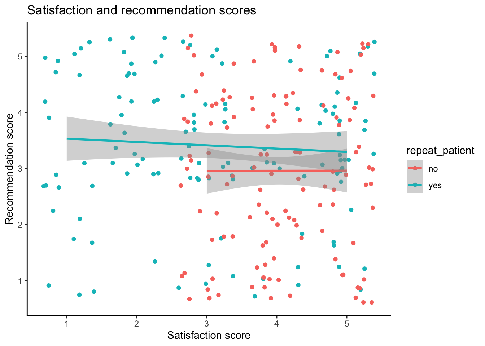
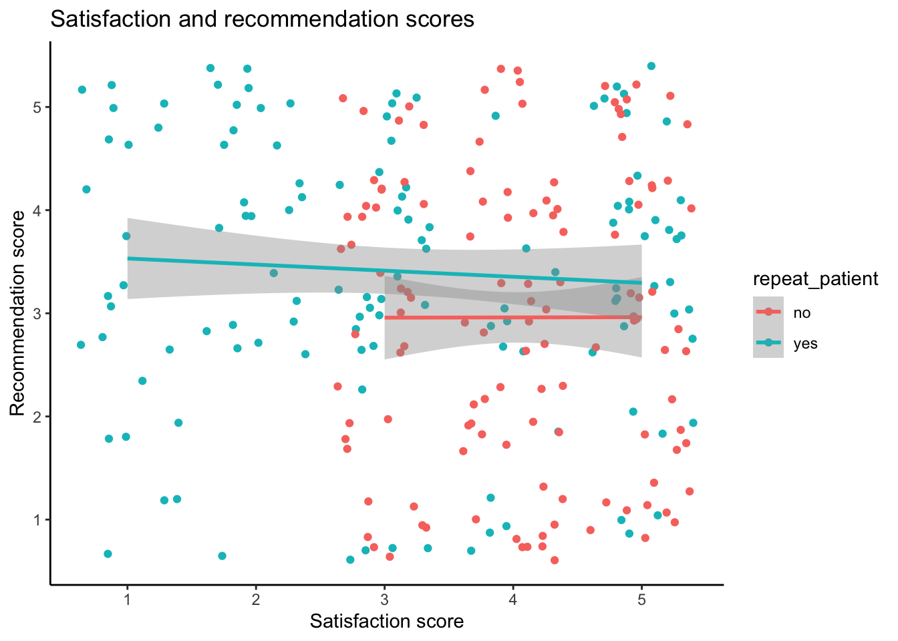

8 Data Tidying
Intended Learning Outcomes
- Be able to reshape data between long and wide formats
- Separate, change, reorder, and rename columns
- Use pipes to chain together functions
Walkthrough video
There is a walkthrough video of this chapter available via Echo360. Please note that there may have been minor edits to the book since the video was recorded. Where there are differences, the book should always take precedence.
8.1 Set-up
First, create a new project for the work we’ll do in this chapter named 08-tidy. Second, open and save and new R Markdown document named tidy.Rmd, delete the welcome text and load the required packages for this chapter.
You’ll need to make a folder called “data” and download two data files into it: tidy_data.csv and untidy_data.csv.
Download the Data tidying cheat sheet.
8.2 Data Structures
The data you work with will likely come in many different formats and structures. Some of these structures may be driven by how the software you use outputs the data, but data structures may also differ because of human intervention or attempts at organisation, some of which may not be particularly helpful.
Data cleaning and tidying will likely be the most time consuming and difficult task you perform. Whilst you can create code recipes for analyses and visualisations, as Hadley Whickham puts it, “every messy dataset is messy in its own way”, which means that you will often have to solve new problems that are specific to the dataset. Additionally, moving between data structures that are intuitive to read by humans and those that are useful for a computer requires a conceptual shift that only comes with practice.
This is all a verbose way of saying that what lies ahead in this chapter is unlikely to sink in on the first attempt and you will need to practice with different examples (preferably with data you know well) before you truly feel comfortable with it.
First, some terminology.
An observation is all the information about a single “thing” in a single condition, such as at one point in time. These things can be customers, sales, orders, feedback questionnaires, tweets, or really anything. Observations should have a way to identify them, such as a unique ID or a unique combination of values like country and year.
A variable is one type of information about the observation. For example, if the observation is a sale, the variables you might have about the sale are the sale ID, the customer’s ID, the date of the sale, the price paid, and method of payment.
A value is the data for one variable for one observation. For example, the value of the date variable from the observation of a sale might be 2021-08-20.
The following table is data that shows the number of items each customer bought each year.
| customer_id | year | items |
|---|---|---|
| 1 | 2018 | 2 |
| 1 | 2019 | 8 |
| 1 | 2020 | 10 |
| 2 | 2018 | 1 |
| 2 | 2019 | 6 |
| 2 | 2020 | 1 |
- What is
items? - How many observations are there in this dataset?
- What is
8?
- There are three variables,
customer_id,year, anditems. - There are six observations, one for each of two customers for each of three years.
-
8is a value because it is a single data point for one variable for one observation.
8.2.1 Untidy data
First, let’s have a look at an example of a messy, or untidy, dataset. Each row has all of the data relating to one customer.
| customer_id | itemsprice_2018 | itemsprice_2019 | itemsprice_2020 | totalprice_2018 | totalprice_2019 | totalprice_2020 |
|---|---|---|---|---|---|---|
| 1 | 2 (3.91) | 8 (4.72) | 10 (5.59) | 7.82 | 37.76 | 55.90 |
| 2 | 1 (3.91) | 6 (4.72) | 1 (5.59) | 3.91 | 28.32 | 5.59 |
| 3 | 4 (3.91) | 5 (4.72) | 5 (5.59) | 15.64 | 23.60 | 27.95 |
| 4 | 10 (3.91) | 1 (4.72) | 3 (5.59) | 39.10 | 4.72 | 16.77 |
| 5 | 3 (3.91) | 9 (4.72) | 8 (5.59) | 11.73 | 42.48 | 44.72 |
- The
itemsprice_{year}columns contain two values (number of items and price per item) - The
totalprice_{year}columns contain the total amount spent by that customer that year, i.e., items * price. - There is data for three different years in the dataset.
Let’s say you wanted to calculate the total price per customer over the three years and the total number of items bought per customer. You can’t perform mathematical operations on the itemsprice_{year} columns because they are character data types.
You would probably normally use Excel to
- split
itemsprice_2018column intoitem_2018andprice_2018columns - split
itemsprice_2019column intoitem_2019andprice_2019columns - split
itemsprice_2020column intoitem_2018andprice_2020columns - add
item_2018 + item_2019 + item_2020to get the total number of items bought per customer - add
totalprice_2018 + totalprice_2019 + totalprice_2020to get the total price per customer
Think about how many steps in Excel this would be if there were 10 years in the table, or a different number of years each time you encountered data like this.
8.2.2 Tidy data
There are three rules for “tidy data, which is data in a format that makes it easier to combine data from different tables, create summary tables, and visualise your data.
- Each observation must have its own row
- Each variable must have its own column
- Each value must have its own cell
This is the tidy version:
| customer_id | year | items | price_per_item | totalprice |
|---|---|---|---|---|
| 1 | 2018 | 2 | 3.91 | 7.82 |
| 1 | 2019 | 8 | 4.72 | 37.76 |
| 1 | 2020 | 10 | 5.59 | 55.90 |
| 2 | 2018 | 1 | 3.91 | 3.91 |
| 2 | 2019 | 6 | 4.72 | 28.32 |
| 2 | 2020 | 1 | 5.59 | 5.59 |
| 3 | 2018 | 4 | 3.91 | 15.64 |
| 3 | 2019 | 5 | 4.72 | 23.60 |
| 3 | 2020 | 5 | 5.59 | 27.95 |
| 4 | 2018 | 10 | 3.91 | 39.10 |
| 4 | 2019 | 1 | 4.72 | 4.72 |
| 4 | 2020 | 3 | 5.59 | 16.77 |
| 5 | 2018 | 3 | 3.91 | 11.73 |
| 5 | 2019 | 9 | 4.72 | 42.48 |
| 5 | 2020 | 8 | 5.59 | 44.72 |
- There are now five variables (columns) because there are five different types of information we have for each observation: the customer id, the year, number of items bought, price per item, and total price.
- Each row is a customer’s orders in a particular year.
- The number of items (
items) and price per item (price_per_item) are in separate columns, so now you can perform mathematical operations on them.
To calculate the total price per customer over the three years and the total number of items bought per customer in R, you could then:
- group the table by customer_id
- sum the
itemscolumn to get the total number of items bought per customer - sum the
totalpricecolumn to get the total price per customer
tidy_data %>%
group_by(customer_id) %>%
summarise(
total_items = sum(items),
total_price = sum(totalprice)
)| customer_id | total_items | total_price |
|---|---|---|
| 1 | 20 | 101.48 |
| 2 | 8 | 37.82 |
| 3 | 14 | 67.19 |
| 4 | 14 | 60.59 |
| 5 | 20 | 98.93 |
If there were 10 years in the table, or a different number of years each time you encountered data like this, the code for producing the tables and plots above never changes.
If you have control over how the data are recorded, it will make your life easier to record it in a tidy format from the start. However, we don’t always have control, so this class will also teach you how to convert untidy tables into tidy tables.
8.3 Reshaping Data
Data tables can be in wide format or long format (or a mix of the two). Wide data are where all of the observations about one thing are in the same row, while long data are where each observation is on a separate row. You often need to convert between these formats to do different types of summaries or visualisation. You may have done something similar using pivot tables in Excel.

It can be easier to just consider one type of measurement at a time. untidy_data has two types of measurements, total price and price per item. Let’s look at just the totalprice data first.
We can select just the columns we want using the dplyr::select() function. This function’s first argument is the data table you want to select from, then each argument after that is either the name of a column in that table, or new_name = old_name. This is a useful function for changing the column names and order of columns, as well as selecting a subset of columns.
Note that because the names of the columns are numbers, they need to be wrapped in backticks otherwise you’ll get an error like:
Error: unexpected '=' in:
" customer_id,
2018 ="| customer_id | 2018 | 2019 | 2020 |
|---|---|---|---|
| 1 | 7.82 | 37.76 | 55.90 |
| 2 | 3.91 | 28.32 | 5.59 |
| 3 | 15.64 | 23.60 | 27.95 |
| 4 | 39.10 | 4.72 | 16.77 |
| 5 | 11.73 | 42.48 | 44.72 |
This is in wide format, where each row is a customer, and represents the data from several years. This is a really intuitive way for humans to read a table, but it’s not as easy to process with code.
The same data can be represented in a long format by creating a new column that specifies what year the observation is from and a new column that specifies the totalprice of that observation. This is easier to use to make summaries and plots.
| customer_id | year | totalprice |
|---|---|---|
| 1 | 2018 | 7.82 |
| 1 | 2019 | 37.76 |
| 1 | 2020 | 55.90 |
| 2 | 2018 | 3.91 |
| 2 | 2019 | 28.32 |
| 2 | 2020 | 5.59 |
| 3 | 2018 | 15.64 |
| 3 | 2019 | 23.60 |
| 3 | 2020 | 27.95 |
| 4 | 2018 | 39.10 |
| 4 | 2019 | 4.72 |
| 4 | 2020 | 16.77 |
| 5 | 2018 | 11.73 |
| 5 | 2019 | 42.48 |
| 5 | 2020 | 44.72 |
It also makes it very easy to use with ggplot(). Run the following plot, and consider how you’d make it with the wide version.
ggplot(long_totalprice, aes(x = totalprice, fill = year)) +
geom_histogram(binwidth = 10, color = "black")
Create a long version of the following table of how many million followers each band has on different social media platforms. You don’t need to use code, just sketch it in a notebook or make a table in a spreadsheet.
| band | ||
|---|---|---|
| The Beatles | 3.8 | 3.8 |
| The Rolling Stones | 3.4 | 3.1 |
| One Direction | 31.3 | 22.8 |
Your answer doesn’t need to have the same column headers or be in the same order.
| account | social_media | followers |
|---|---|---|
| The Beatles | 3.8 | |
| The Beatles | 3.8 | |
| The Rolling Stones | 3.4 | |
| The Rolling Stones | 3.1 | |
| One Direction | 31.3 | |
| One Direction | 322.8 |
If you’re a researcher and you’re used to thinking about IVs and DVs, you may find it easier to remember that each IV and DV should have its own column, rather than a column for each level of the IV.
The pivot functions allow you to transform a data table from wide to long or long to wide.
8.3.1 Wide to long
The function pivot_longer() converts a wide data table to a longer format by converting the headers from specified columns into the values of new columns, and combining the values of those columns into a new condensed column.
This function has several arguments:
-
cols: the columns you want to make long; you can refer to them by their names, likec(`2018`, `2019`, `2020`)or`2018`:`2020`or by their numbers, likec(2, 3, 4)or2:4 -
names_to: what you want to call the new columns that thecolscolumn header names will go into -
values_to: what you want to call the new column that contains the values in thecols
With the pivot functions, it can be easier to show than tell - run the below code and then compare wide_totalprice with long_totalprice and the pivot code and try to map each argument to what has changed.
8.3.2 Long to wide
We can also go from long to wide format using the pivot_wider() function. Instead of returning to the original table with a row for each customer and a column for each year, this new wide table will have a row for each year and a column for each customer. It can be awkward to have numbers for column names, so we use names_prefix to add “C_” before each new column name.
-
id_cols: the column(s) that uniquely identify each new row -
names_from: the column(s) that contain your new column headers -
names_prefix: A prefix to add to the values in the names column -
values_from: the column that contains the values for the new columns
| year | C_1 | C_2 | C_3 | C_4 | C_5 |
|---|---|---|---|---|---|
| 2018 | 7.82 | 3.91 | 15.64 | 39.10 | 11.73 |
| 2019 | 37.76 | 28.32 | 23.60 | 4.72 | 42.48 |
| 2020 | 55.90 | 5.59 | 27.95 | 16.77 | 44.72 |
8.4 Multi-step tidying
You often need to go from wide, to long, to an intermediate shape in order to get your data into a format that is useful for plotting, where there is a column for each variable that you want to represent with an aesthetic.
Our full untidy_data table has seven columns: a customer ID, three columns for itemsprice and 3 columns for totalprice.
| customer_id | itemsprice_2018 | itemsprice_2019 | itemsprice_2020 | totalprice_2018 | totalprice_2019 | totalprice_2020 |
|---|---|---|---|---|---|---|
| 1 | 2 (3.91) | 8 (4.72) | 10 (5.59) | 7.82 | 37.76 | 55.90 |
| 2 | 1 (3.91) | 6 (4.72) | 1 (5.59) | 3.91 | 28.32 | 5.59 |
| 3 | 4 (3.91) | 5 (4.72) | 5 (5.59) | 15.64 | 23.60 | 27.95 |
| 4 | 10 (3.91) | 1 (4.72) | 3 (5.59) | 39.10 | 4.72 | 16.77 |
| 5 | 3 (3.91) | 9 (4.72) | 8 (5.59) | 11.73 | 42.48 | 44.72 |
We want to get it into the tidy format below where each row is an observation of one customer per year, with the columns of customer_id, year, item, price_per_item and totalprice. Before trying to reshape any dataset, you should be able to visualise what it will look like. Sketching out your tables on a piece of paper can really help make these transformations make sense.
| customer_id | year | items | price_per_item | totalprice |
|---|---|---|---|---|
| 1 | 2018 | 2 | 3.91 | 7.82 |
| 1 | 2019 | 8 | 4.72 | 37.76 |
| 1 | 2020 | 10 | 5.59 | 55.90 |
| 2 | 2018 | 1 | 3.91 | 3.91 |
| 2 | 2019 | 6 | 4.72 | 28.32 |
| 2 | 2020 | 1 | 5.59 | 5.59 |
| 3 | 2018 | 4 | 3.91 | 15.64 |
| 3 | 2019 | 5 | 4.72 | 23.60 |
| 3 | 2020 | 5 | 5.59 | 27.95 |
| 4 | 2018 | 10 | 3.91 | 39.10 |
| 4 | 2019 | 1 | 4.72 | 4.72 |
| 4 | 2020 | 3 | 5.59 | 16.77 |
| 5 | 2018 | 3 | 3.91 | 11.73 |
| 5 | 2019 | 9 | 4.72 | 42.48 |
| 5 | 2020 | 8 | 5.59 | 44.72 |
8.4.1 One observation per row
The original table has observations from each customer over three years. This is too many observations per row, so first we’ll start by making the table long. We need to make 6 rows for each customer, one for each category (item price/total price) and year combination, with columns for the customer ID, year, category, and value.
Because we’ll be combining columns with numeric (totalprice) and character (itemsprice) data, we need to make the new value column a character data type using values_transform, since numbers can be represented as characters (like "3.5"), but character strings can’t be represented as numbers.
The argument names_sep is set to the character string used to join names if names_from is more than one column. Alternatively, you can use the argument names_pattern, which can be more powerful but also a little harder to understand how to set up.
longer_data <- pivot_longer(
data = untidy_data,
cols = itemsprice_2018:totalprice_2020, # columns to make long
names_to = c("category", "year"), # new column names for cols
names_sep = "_", # how to split cols into new columns
# names_pattern = "(.*)_(.*)", # alternative to names_sep
values_to = "value", # new column name for values
# make sure new columns are the right data type
names_transform = list(year = as.integer),
values_transform = list(value = as.character)
)| customer_id | category | year | value |
|---|---|---|---|
| 1 | itemsprice | 2018 | 2 (3.91) |
| 1 | itemsprice | 2019 | 8 (4.72) |
| 1 | itemsprice | 2020 | 10 (5.59) |
| 1 | totalprice | 2018 | 7.82 |
| 1 | totalprice | 2019 | 37.76 |
| 1 | totalprice | 2020 | 55.9 |
| 2 | itemsprice | 2018 | 1 (3.91) |
| 2 | itemsprice | 2019 | 6 (4.72) |
| 2 | itemsprice | 2020 | 1 (5.59) |
| 2 | totalprice | 2018 | 3.91 |
| 2 | totalprice | 2019 | 28.32 |
| 2 | totalprice | 2020 | 5.59 |
| 3 | itemsprice | 2018 | 4 (3.91) |
| 3 | itemsprice | 2019 | 5 (4.72) |
| 3 | itemsprice | 2020 | 5 (5.59) |
| 3 | totalprice | 2018 | 15.64 |
| 3 | totalprice | 2019 | 23.6 |
| 3 | totalprice | 2020 | 27.95 |
| 4 | itemsprice | 2018 | 10 (3.91) |
| 4 | itemsprice | 2019 | 1 (4.72) |
| 4 | itemsprice | 2020 | 3 (5.59) |
| 4 | totalprice | 2018 | 39.1 |
| 4 | totalprice | 2019 | 4.72 |
| 4 | totalprice | 2020 | 16.77 |
| 5 | itemsprice | 2018 | 3 (3.91) |
| 5 | itemsprice | 2019 | 9 (4.72) |
| 5 | itemsprice | 2020 | 8 (5.59) |
| 5 | totalprice | 2018 | 11.73 |
| 5 | totalprice | 2019 | 42.48 |
| 5 | totalprice | 2020 | 44.72 |
8.4.2 One variable per column
Now this table is long, but not tidy. The value column contains data from two different variables. We need to make the table wider, but not as wide as before. We want to keep the year column and make new columns called itemsprice and totalprice with the relevant customer’s value for that variable and year.
| customer_id | year | itemsprice | totalprice |
|---|---|---|---|
| 1 | 2018 | 2 (3.91) | 7.82 |
| 1 | 2019 | 8 (4.72) | 37.76 |
| 1 | 2020 | 10 (5.59) | 55.9 |
| 2 | 2018 | 1 (3.91) | 3.91 |
| 2 | 2019 | 6 (4.72) | 28.32 |
| 2 | 2020 | 1 (5.59) | 5.59 |
| 3 | 2018 | 4 (3.91) | 15.64 |
| 3 | 2019 | 5 (4.72) | 23.6 |
| 3 | 2020 | 5 (5.59) | 27.95 |
| 4 | 2018 | 10 (3.91) | 39.1 |
| 4 | 2019 | 1 (4.72) | 4.72 |
| 4 | 2020 | 3 (5.59) | 16.77 |
| 5 | 2018 | 3 (3.91) | 11.73 |
| 5 | 2019 | 9 (4.72) | 42.48 |
| 5 | 2020 | 8 (5.59) | 44.72 |
Techinically, you can skip setting the id_cols argument, because all of the columns apart from the names_from column and the values_from column identify the observation (e.g., each observation is identified by the unique combination of customer_id and year). You only have to set the id_cols argument when this is not the case.
8.4.3 One value per cell
The cells in the itemsprice column actually contain two different values. We need to split it into two columns for the variables items, and price_per_item. You can split a column into parts with the function tidyr::separate(). There is a space between the number of items and the brackets, so we can split it along this space – if you are in charge of how data is stored, ensuring data is entered consistently makes this much easier.
| customer_id | year | items | price_per_item | totalprice |
|---|---|---|---|---|
| 1 | 2018 | 2 | (3.91) | 7.82 |
| 1 | 2019 | 8 | (4.72) | 37.76 |
| 1 | 2020 | 10 | (5.59) | 55.9 |
| 2 | 2018 | 1 | (3.91) | 3.91 |
| 2 | 2019 | 6 | (4.72) | 28.32 |
| 2 | 2020 | 1 | (5.59) | 5.59 |
| 3 | 2018 | 4 | (3.91) | 15.64 |
| 3 | 2019 | 5 | (4.72) | 23.6 |
| 3 | 2020 | 5 | (5.59) | 27.95 |
| 4 | 2018 | 10 | (3.91) | 39.1 |
| 4 | 2019 | 1 | (4.72) | 4.72 |
| 4 | 2020 | 3 | (5.59) | 16.77 |
| 5 | 2018 | 3 | (3.91) | 11.73 |
| 5 | 2019 | 9 | (4.72) | 42.48 |
| 5 | 2020 | 8 | (5.59) | 44.72 |
If the new columns should have a different data type from the old column, set convert = TRUE to automatically fix them. This is common when you have columns that contain multiple numbers, separated by commas or semicolons. These are character types before they are separated, but should be numeric types after so that you can do mathematical operations like sum them.
8.4.4 Altering data
The column price_per_item is still a character column because it has parentheses. There are a few ways to fix this. You can use the dplyr::mutate() function to change a column or add a new one.
Here, we’ll use stringr::str_replace_all() to replace all of the “(” and “)” with ““.
| customer_id | year | items | price_per_item | totalprice |
|---|---|---|---|---|
| 1 | 2018 | 2 | 3.91 | 7.82 |
| 1 | 2019 | 8 | 4.72 | 37.76 |
| 1 | 2020 | 10 | 5.59 | 55.9 |
| 2 | 2018 | 1 | 3.91 | 3.91 |
| 2 | 2019 | 6 | 4.72 | 28.32 |
| 2 | 2020 | 1 | 5.59 | 5.59 |
| 3 | 2018 | 4 | 3.91 | 15.64 |
| 3 | 2019 | 5 | 4.72 | 23.6 |
| 3 | 2020 | 5 | 5.59 | 27.95 |
| 4 | 2018 | 10 | 3.91 | 39.1 |
| 4 | 2019 | 1 | 4.72 | 4.72 |
| 4 | 2020 | 3 | 5.59 | 16.77 |
| 5 | 2018 | 3 | 3.91 | 11.73 |
| 5 | 2019 | 9 | 4.72 | 42.48 |
| 5 | 2020 | 8 | 5.59 | 44.72 |
8.4.5 Fixing data types
The price_per_item and totalprice columns are still characters, so you can’t do things like calculate the sum of totalprice.
Rows: 15
Columns: 5
$ customer_id <dbl> 1, 1, 1, 2, 2, 2, 3, 3, 3, 4, 4, 4, 5, 5, 5
$ year <int> 2018, 2019, 2020, 2018, 2019, 2020, 2018, 2019, 2020, 2…
$ items <int> 2, 8, 10, 1, 6, 1, 4, 5, 5, 10, 1, 3, 3, 9, 8
$ price_per_item <chr> "3.91", "4.72", "5.59", "3.91", "4.72", "5.59", "3.91",…
$ totalprice <chr> "7.82", "37.76", "55.9", "3.91", "28.32", "5.59", "15.6…Once the data are clean and tidy, you can fix all of your column data types in one step using readr::type_convert(). This is good practice when you’ve finished cleaning a data set. If the automatic type detection doesn’t work as expected, this usually means that you still have non-numeric characters in a column where there were only supposed to be numbers. You can also manually set the column types in the same way as for readr::read_csv() (see Chapter 4)).
tidy_data <- type_convert(
df = mutated_data,
trim_ws = TRUE # removes spaces before and after values
)
# check the data types
glimpse(tidy_data)Rows: 15
Columns: 5
$ customer_id <dbl> 1, 1, 1, 2, 2, 2, 3, 3, 3, 4, 4, 4, 5, 5, 5
$ year <int> 2018, 2019, 2020, 2018, 2019, 2020, 2018, 2019, 2020, 2…
$ items <int> 2, 8, 10, 1, 6, 1, 4, 5, 5, 10, 1, 3, 3, 9, 8
$ price_per_item <dbl> 3.91, 4.72, 5.59, 3.91, 4.72, 5.59, 3.91, 4.72, 5.59, 3…
$ totalprice <dbl> 7.82, 37.76, 55.90, 3.91, 28.32, 5.59, 15.64, 23.60, 27…8.5 Pipes

We’ve already introduced pipes in Section 5.3.2 but this type of data processing is where they really start to shine, as they can significantly reduce the amount of code you write.
As a recap, a pipe takes the result of the previous function and sends it to the next function as its first argument, which means that you do not need to create intermediate objects. Below is all the code we’ve used in this chapter, and in the process we created five objects. This can get very confusing in longer scripts.
untidy_data <- read_csv("data/untidy_data.csv",
show_col_types = FALSE)
longer_data <- pivot_longer(
data = untidy_data,
cols = itemsprice_2018:totalprice_2020,
names_to = c("category", "year"),
names_sep = "_",
values_to = "value",
names_transform = list(year = as.integer),
values_transform = list(value = as.character)
)
wider_data <- pivot_wider(
data = longer_data,
id_cols = c(customer_id, year),
names_from = category,
values_from = value
)
split_data <- separate(
data = wider_data,
col = itemsprice,
into = c("items", "price_per_item"),
sep = " ",
remove = TRUE,
convert = TRUE
)
mutated_data <- mutate(
.data = split_data,
price_per_item = stringr::str_replace_all(
string = price_per_item,
pattern = "[()]",
replacement = ""
)
)
tidy_data <- type_convert(
df = mutated_data,
trim_ws = TRUE
)You can give each object the same name and keep replacing the old data object with the new one at each step. This will keep your environment clean, but it makes debugging code much harder.
For longer series of steps like the one above, using pipes can eliminate many intermediate objects. This also makes it easier to add an intermediate step to your process without having to think of a new table name and edit the table input to the next step (which is really easy to accidentally miss).
tidy_data <- read_csv(file = "data/untidy_data.csv",
show_col_types = FALSE) %>%
pivot_longer(
cols = itemsprice_2018:totalprice_2020,
names_to = c("category", "year"),
names_sep = "_",
values_to = "value",
names_transform = list(year = as.integer),
values_transform = list(value = as.character)
) %>%
pivot_wider(
id_cols = c(customer_id, year),
names_from = category,
values_from = value
) %>%
separate(
col = itemsprice,
into = c("items", "price_per_item"),
sep = " ",
remove = TRUE,
convert = TRUE
) %>%
mutate(
price_per_item = stringr::str_replace_all(
string = price_per_item,
pattern = "[()]",
replacement = ""
)
) %>%
type_convert(
trim_ws = TRUE
)You can read the code above like this:
-
Read the data with
read_csv()-
file: from the file at r path(“data/untidy_data.csv”)`, -
show_col_types: do not show the colukmn types message; and then
-
-
Reshape the data longer with
pivot_longer()-
cols: take the columns fromitemsprice_2018tototalprice_2020, -
names_to: create new columns called “category” and “year” from thecolsheader names, -
names_sep: separate the column names using “_” -
values_to: create a new column called “value” from thecolsvalues, -
names_transform: transform theyearcolumn to integers, -
values_transform: transform thevaluecolumn to characters; and then
-
-
Reshape the data wider with
pivot_wider()-
id_cols: each row should be an observation of a uniquecustomer_idandyear, -
names_from: get the new column names from the values in thecategorycolumn, -
values_from: get the new column values from the values in thevaluecolumn; and then
-
-
Split multiple values in the same column with
separate()-
col: separate the columnitemsprice, -
into: into new columns called “items” and “price_per_item”, -
sep: separate the values at each ” “, -
remove: do remove the old column, -
convert: do convert the new columns into the right data types; and then
-
-
Change a column with
mutate()-
price_per_item: replace the existing columnprice_per_itemwith the result of a search and replace withstr_replace_all():-
string: the strings to modify come from theprice_per_itemcolumns, -
pattern: search for left or right parentheses, -
replacement: replace them with ““; and then,
-
-
-
Fix data types with
type_convert()-
trim_ws: remove spaces, tabs, and line breaks from the start and end of each value
-
Don’t feel like you always need to get all of your data wrangling code into a single pipeline. You should make intermediate objects whenever you need to break up your code because it’s getting too complicated or if you need to debug something.
You can debug a pipe by highlighting from the beginning to just before the pipe you want to stop at. Try this by highlighting from data <- to the end of the separate function and typing command-enter (mac) or control-enter (PC). What does data look like now?
8.6 Exercises
Let’s try a couple of examples.
- Save your current Markdown, close it, and open a new Rmd named “Patient_survey”.
- Download a copy of wide_exercise-1.csv and wide_exercise-2.csv into your data folder.
- In the set-up code chunk, load the
tidyverse then load the two data files in usingread_csv()and name the objectswide1andwide2
The two datasets represent simulated data from a patient satisfaction survey. We’ll do them one at a time, as they differ in complexity.
8.6.1 Survey 1
wide1 has data from 50 patients who were asked five questions about their most recent experience at a health centre. The results from this questionnaire are typically reported as a single overall satisfaction score, which is calculated by taking the mean of the five responses. Additionally, the survey also records whether the patient was attending the clinic for the first time, or as a repeat patient.
- Use your method of choice to look at the dataset and familiarise yourself with its structure and data.
As noted, it’s important to think through what your tidied data should look like. Often, the problem with data wrangling in R isn’t actually the code, it’s a lack of understanding of the data that’s being worked on.
- How many variables should the long-form version of
widehave? - How many observations should the long-form version of
wide1have?
- There should be four variables, as there are 4 types of data: patient id, whether they are a repeat patient, the question they were asked, and their response.
- There will be 250 observations or rows of data because each patient will have 5 rows of data (one per question) and there are 50 patients (50 * 5 = 250).
8.6.2 Tidy 1
Transform wide1 to long-form using pivot_longer() and store it in an object named tidy1
8.6.3 Survey 2
wide2 also has data from 50 patients, however, there are now two measures included in the questionnaire. There are still five questions that relate to satisfaction, but there are also five questions that relate to whether the patient would recommend the medical practice to a friend. Both measures are typically reported by calculating an overall mean for each of the five items.
- Use your method of choice to look at the dataset and familiarise yourself with its structure and data.
This is not as simple as the first exercise because there’s actually two potential ways you might tidy this data, depending on what you want to do with it and how you conceptualise the two different measurements. It’s important to recognise that many of your coding problems will not have just one solution.
Tidy 2a
For the first option, we’re going to treat the “satisfaction” and “recommendation” measurements as two categories of the same variable. This will be a fully long-form data set with five variables id, repeat_patient, question (the question number), category (whether it’s sat or rec), and response (the numerical rating).
- How many observations should the fully long-form version of
wide2have?
There will be 500 rows of data because each participant will have 10 rows: 5 for the satisfaction questions and five for the recommendation questions.
Transform wide2 to full long-form using pivot_longer() and store it in an object named tidy2a.
This exercise requires multiple steps and you may need to look at the help documentation.
data %>% pivot_longer() %>% separate()
into = c("col1", "col2")
Tidy 2b
The second option is to treat the satisfaction and recommendation scores as two distinct variables. This only makes sense if the satisfaction and recommendation scores for each question number are related to each other (e.g., q1 is about the same thing for both questions), making them part of the same observation.
This version should also have five variables, but it won’t be fully long-form, it’ll be a slight mix of the two that we’re going to call “semi-long”. The variables in the semi-long version will be id, repeat, question (the question number), sat (the response for the satisfaction question), and rec (the response for the recommendation question).
- How many observations should the semi-long version of
wide2have?
There will be 250 rows of data because, just like tidy1, each participant will have 5 rows, one for each of the five questions. The different responses to the satisfaction and recommendation questions are in different variables.
This also takes multiple steps.
You can reuse the code from tidy2a, you just need to add on an extra line that makes the data slightly wider.
data %>% pivot_longer() %>% separate() %>% pivot_wider()
8.6.4 Analysis and visualisation
Using group_by() and summarise(), calculate the mean score for each participant for both satisfaction and recommendation. Do this for both versions of the dataset so that you can see how the structure of the dataset changes the approach you need to take.
Replicate the following:
Plot 1
Scatterplot showing the relationship between satisfaction and recommendation scores, by whether the patient is a repeat patient.
geom_jitter()

Plot 2
Boxplots showing satisfaction and recommends scores for new and repeat patients separately.

Plot 3
Histogram showing the distribution of all responses, across questions and categories.

8.6.5 Your data
Finally, find a wide-form dataset of your own and try and tidy it into long-form. If you get stuck or you just want to check your solution, post it on Teams - just remember to be careful about sharing confidential data if it’s your own dataset.
If your head hurts a bit at this point, rest assured it’s absolutely normal. As we said at the start, reshaping and tidying data is a conceptual leap and there’s no shortcut to the fact it just takes a bit of time and practice with different datasets - you will get there eventually!
8.7 Glossary
| term | definition |
|---|---|
| character | A data type representing strings of text. |
| data type | The kind of data represented by an object. |
| long | A data format where each observation is on a separate row |
| observation | All of the data about a single trial or question. |
| tidy data | A format for data that maps the meaning onto the structure. |
| value | A single number or piece of data. |
| variable | (coding): A word that identifies and stores the value of some data for later use; (stats): An attribute or characteristic of an observation that you can measure, count, or describe |
| wide | A data format where all of the observations about one subject are in the same row |
8.8 Further resources
- Data tidying cheat sheet
- Tidy Data
- Chapter 12: Tidy Data in R for Data Science
- Chapter 18: Pipes in R for Data Science